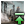

Astral rift
Version
This article is for the PC version of Stellaris only.
| |
Available only with the Astral Planes DLC enabled. |
Astral rifts are tears in time and space that lead to other universes. With Astral Planes enabled, the galaxy will generate a new kind of celestial object called an "Astral Scar", which can potentially open up into an Astral Rift. The first time an astral rift is encountered, it starts the A Rift in Space situation. Each astral rift provides a deposit of  2 astral threads which may be exploited by constructing a research station above the astral rift. Completing any chapter usually grants a reward of
2 astral threads which may be exploited by constructing a research station above the astral rift. Completing any chapter usually grants a reward of  astral threads as well. The name of an astral rift only becomes visible after its first chapter has been completed. Astral rifts in unowned systems can be explored but those inside the borders of another empire cannot be explored except by empires with the
astral threads as well. The name of an astral rift only becomes visible after its first chapter has been completed. Astral rifts in unowned systems can be explored but those inside the borders of another empire cannot be explored except by empires with the  Riftworld origin.
Riftworld origin.
Completed astral rifts, if the Blorgs don't exist in the galaxy and the player isn't using their species portrait, have a 2% chance to spawn the renowned paragon Mercedes Romero.
Exploration mechanics
Exploring an astral rift requires the rift to be within the empire's borders, the  Rift Sphere technology, and a
Rift Sphere technology, and a  scientist and science ship assigned to it. The scientist remains within the rift and uncovers its secrets over the course of multiple chapters, with each chapter providing a part of the rift's story.
scientist and science ship assigned to it. The scientist remains within the rift and uncovers its secrets over the course of multiple chapters, with each chapter providing a part of the rift's story.
| Result total | Outcome | Exp |
|---|---|---|
| ≥ 14 | Completes the current chapter | 75 |
| 10 - 13 | Adds 2 clues for the next phase | 40 |
| 5 - 9 | Adds 1 clue for the next phase | 25 |
| 4 ≤ | May trigger failure, or no effect | 10 |
Exploration proceeds in phases of 90 days; this time can be modified by leader traits and other modifiers. At the end of each phase, a die is rolled, with a random result from 1 to 10; adding the current number of clues and the scientist's Astral Rift Skill and subtracting the chapter's difficulty gives the total result, as in the following formula:
- .

The scientist's skill is equal to the scientist's level, plus any modifiers from leader traits, including councilors .
A result of 14 or greater completes the current chapter; a result of 10-13 adds two clues for the next phase, a result of 5-9 adds one clue, a result of 4 or less adds no clues. Completing the chapter gives the scientist 75 experience; finding two clues gives them 40 experience, one clue 25 experience. Even when finding no clues still gives the scientist 10 experience. Clues gained from events, however, do not automatically give experience.
Finding no clues has a 1.5% (0.75% for empires with the  Riftworld origin) chance of failing the chapter. Only some certain chapters can be failed as most don't have a failure effect.
Riftworld origin) chance of failing the chapter. Only some certain chapters can be failed as most don't have a failure effect.
Exploration of astral rifts cannot be done by councilors and cannot be stopped once started.
Progressive spawn
After the mid-game year is reached, every Empire with eligible systems will have a yearly chance to split an existing astral scar into an astral rift, or - only if no astral scars remain - to generate a new astral scar.
This chance (out of 100) is the following:
Failed to parse (SVG (MathML can be enabled via browser plugin): Invalid response ("Math extension cannot connect to Restbase.") from server "https://en.wikipedia.org/api/rest_v1/":): {\displaystyle 2*years\,since\,last\,spawn*additional\,weight+\frac{eligible\,systems}{3}}
Where:
- Years since last spawn only increases on a roll - that is, if there are eligible systems and progressive spawn is not on a 10-year moratorium.
- Additional weight is 1 by default, but multiplied by 2 with the
 Riftworld origin, by 2 again with the Dimensional Worshipcivic and by 10 if the Empire has begun the A Rift in Space situation but lost their last Astral Rift
Riftworld origin, by 2 again with the Dimensional Worshipcivic and by 10 if the Empire has begun the A Rift in Space situation but lost their last Astral Rift Dimensional Worship
Dimensional Worship Dimensional Enterprise
Dimensional Enterprise - A system is eligible if it either has an astral scar with no anomalies, or can spawn an astral scar, that is:
- It is not a starting system, a Fallen Empire system, or another special system (see has_special_star_flag_trigger for a full list)
- It can already spawn an astral scar/rift and does not neighbour any system with an astral scar/rift
The chance is further lowered by a flat 25 points if the Empire has already completed 5 astral rifts.
After an astral scar is split or a new astral scar is generated, no more can be generated for 10 years.
Unique astral rifts
Ruined Planet

| Chapter | Outcome | |||||||||||||||||||||||
|---|---|---|---|---|---|---|---|---|---|---|---|---|---|---|---|---|---|---|---|---|---|---|---|---|
| 5-B |
| |||||||||||||||||||||||
| 7 | This outcome has three parts. The player always receives all three:
| |||||||||||||||||||||||
Genesis
| Chapter | Outcome | ||||||||
|---|---|---|---|---|---|---|---|---|---|
| 1 |
| ||||||||
| 4 | *
| ||||||||
Strange Station

{kind=link}
{kind=link}
| Chapter | Outcome |
|---|---|
| 4-A |
|
| 4-B | *
|
The Microverse
{kind=link}
| Chapter | Outcome | |
|---|---|---|
| 4-A |
|
None |
| 5-B | * |
Small |
| 6 | *Receive the "A Star is Born" empire modifier for 10 years (+10% |
Entertainment Nexus
{kind=link}
| Chapter | Outcome |
|---|---|
| 8-A | (Acrobats + Tissue Sample)
|
| 8-B | (Acrobats + Tip)
|
| 8-C | (Cyborg + Tissue Sample)
|
| 8-D | (Cyborg + Snack)
|
| 8-E | (Contortionist + Tissue Sample)
|
| 8-F | (Contortionist + Tip)*Receive some |
The Crystal Rift
{kind=link}
| Chapter | Outcome |
|---|---|
| 3-A |
|
| 5 |
|
| 6 | This outcome is only possible if the
|
Precursor astral rifts
Precursor astral rifts lead to universes where the precursor civilizations from the  Ancient Relics DLC are still alive. The astral rifts will have additional narration if the matching precursor story has been started, and especially if it has been completed, but options and rewards are the same. Additionally, having the respective precursor chain started will double the chance to get these rift, while having the chain finished will quadruple the chance.
Ancient Relics DLC are still alive. The astral rifts will have additional narration if the matching precursor story has been started, and especially if it has been completed, but options and rewards are the same. Additionally, having the respective precursor chain started will double the chance to get these rift, while having the chain finished will quadruple the chance.
Psionic Stranger
{kind=link}
Psionic Stranger leads to an alternate universe where the Zroni are still alive.
- 1. Psionic Stranger: "Find this being.", gives
 small astral threads reward (40, 50, or 60).
small astral threads reward (40, 50, or 60). - 2. The Far-Seer: "Listen to the Far-Seer's words.", gives small astral threads reward (40, 50, or 60).
- 3. The Far Seer's Burden, gives small astral threads reward (40, 50, or 60), choice:
 6 "Reveal the fate of the Zroni." / "Reveal what we know of the Zroni." / "We can only offer our perspective.", proceed to Portents of Doom / Certain Fate / Our Perspective
6 "Reveal the fate of the Zroni." / "Reveal what we know of the Zroni." / "We can only offer our perspective.", proceed to Portents of Doom / Certain Fate / Our Perspective 1 "It is not our place to intervene." / "Such spiritual pursuits are trivial.", proceed to Leaving it to Fate
1 "It is not our place to intervene." / "Such spiritual pursuits are trivial.", proceed to Leaving it to Fate
- 4. Leaving it to Fate: "Explore the mineral cache", gives small astral threads reward (40, 50, or 60), proceed to Opportunity Strikes
- 5. Opportunity Strikes, gives
 minerals,
minerals,  rare crystals and large astral threads reward (140, 150, or 160). Ends the rift.
rare crystals and large astral threads reward (140, 150, or 160). Ends the rift.
- 4. Portents of Doom / Certain Fate / Our Perspective, gives small astral threads reward (40, 50, or 60), choice:
- "It is a doomed endeavor" / "Advise against interfering with the Shroud", proceed to Prophetic Advice (not available if
 Fanatic Spiritualist and has not discovered the Zroni)
Fanatic Spiritualist and has not discovered the Zroni) - "This time, it may be different" / "Encourage the Far-Seer to breach the Shroud", proceed to Prophetic Advice (not available if
 Fanatic Materialist and has not discovered the Zroni)
Fanatic Materialist and has not discovered the Zroni)
- "It is a doomed endeavor" / "Advise against interfering with the Shroud", proceed to Prophetic Advice (not available if
- 5. Prophetic Advice: "Perhaps we will meet again.", gives 75% progress towards a random
 Psionics technology.
Psionics technology.  Gestalt Consciousness and Materialist empires are rewarded with
Gestalt Consciousness and Materialist empires are rewarded with  energy instead. Ends the rift.
energy instead. Ends the rift.
If concluded the rift with Prophetic Advice, get an event in 3-5 years:
- If picked "It is a doomed endeavor" / "Advise against interfering with the Shroud", get A Message from Beyond event:
- Gives 75% progress towards a random
 Particles technology and large astral threads reward (140, 150, or 160).
Particles technology and large astral threads reward (140, 150, or 160).
- Gives 75% progress towards a random
- If picked "This time, it may be different" / "Encourage the Far-Seer to breach the Shroud", get The Shroud's Promise event:
- Gives the Zroni Insight Storm Safeguard modifier, reducing the negative effects of space storms by 50%
- Gives energy, rare crystals, and large astral threads reward (140, 150, or 160) .
Siege on Paradise
{kind=link}
Siege on Paradise leads to an alternate universe where the Baol are still alive.
- 1. Siege on Paradise, gives small astral threads reward (40, 50, or 60), choice:
 3 "Contact the planet's inhabitants."
3 "Contact the planet's inhabitants."- 3 "Contact the orbiting fleet."
- Contacted the planet's inhabitants (the Baol):
- 2. Meeting the Baol / Plantoid Encounter: "Disclose what we know of the Baol." / "We are explorers.", gives small astral threads reward (40, 50, or 60)
- 3. Impending Doom / A Request for Aid, gives small astral threads reward (40, 50, or 60)
- 3 "We will help however we can.", proceed to Saving the Baol / Considering Options
- 1 "It is not our place to interfere", proceed to Not Our Fight
- 4. Not Our Fight, ""Prepare observation satellites.", gives small astral threads reward (40, 50, or 60)
- 5. Ashes to Ashes, "This is a unique research opportunity.", ends the rift, creates a
 25 society research deposit on the astral rift. After 2-4 years, triggers the Dust to Dust event:
25 society research deposit on the astral rift. After 2-4 years, triggers the Dust to Dust event:
- Dust to Dust, gives society and
 engineering research, removes the society research deposit from the rift.
engineering research, removes the society research deposit from the rift.
- Dust to Dust, gives
- 4. Saving the Baol / Considering Options, gives small astral threads reward (40, 50, or 60)
- 6 "Genetically modify the Baol.", proceed to Genetic Reinforcement (requires
 Gene Tailoring)
Gene Tailoring) - 6 "Deploy experimental planetary cloaking.", pay 50 astral threads, proceed to Under the Radar (requires
 Basic Cloaking Fields)
Basic Cloaking Fields) - 6 "Generate an astral shield.", pay 100 astral threads, proceed to Astral Shield (unavailable if has both of the above technologies)
- 2 "Preserve the seedlings.", proceed to Life Finds a Way
- 5. Final outcome:
- 2. Meeting the Baol / Plantoid Encounter: "Disclose what we know of the Baol." / "We are explorers.", gives
Outcome Effect Genetic Reinforcement An option to recruit the paragon Oakenstalk Under the Radar  Unlocks the Astral Cloaking edict:
Unlocks the Astral Cloaking edict:
 +1 Cloaking Strength while active
+1 Cloaking Strength while active
Astral Shield - Astral Shield Experimentation modifier:
 +5% Shield Hit Points
+5% Shield Hit Points- +5% Shield Hardening
Life Finds a Way - 3 Baol pops are created on a random planet:


 Pacifist ethic
Pacifist ethic
- Regardless of outcome, gives large astral threads reward (140, 150, or 160), ends the rift.
- Regardless of outcome, gives
- Contacted the orbiting fleet (the Grunur):
- 2. Flagship Escort, "Let us see where this leads..." / "The Grunur are dangerous. Be cautious.", gives small astral threads reward (40, 50, or 60)
- 3. A Unique Conversation, "We are explorers." / "We are explorers, and we have seen your future.", gives small astral threads reward (40, 50, or 60)
- IF Discovered the Baol precursor:
- 4. The Infamous Grunur, gives small astral threads reward (40, 50, or 60)
- 6 "Share rare military technology with the Grunur.", proceed to Sharing of Knowledge (requires a rare technology such as
 Artificial Dragonscales,
Artificial Dragonscales,  Dark Matter Propulsion, or
Dark Matter Propulsion, or  Jump Drive)
Jump Drive) - 4 "Share Baol research data with the Grunur.", proceed to Bearing Witness
- 2 "Refuse to co-operate.", proceed to Expedition's End
- 5. Sharing of Knowledge, "A worthy exchange.", gives 25% progress towards a random
 Military Theory technology, proceed to Grunur Weapons Interface
Military Theory technology, proceed to Grunur Weapons Interface - 5. Bearing Witness, gives small astral threads reward (40, 50, or 60)
- 4 "Watch the extermination.", proceed to Watching a World Burn
- 1 "Refuse.", proceed to Expedition's End
- 4. The Infamous Grunur, gives
- Did not discover the Baol precursor:
- 4. A Meek Introduction, gives small astral threads reward (40, 50, or 60)
- 1 "Respond with bravado. Do not be intimidated.", proceed to Taking a Stand
- 1 "Attempt to reason with them.", proceed to Punishment
- 5. Taking a Stand, gives small astral threads reward (40, 50, or 60)
- 4 "Press the crystal. Order the launch.", proceed to Watching a World Burn
- 1 "Refuse.", proceed to Expedition's End
- 5. Punishment, "Remain strong. We will find a way to recover you.", gives small astral threads reward (40, 50, or 60), proceed to Expedition's End
- 4. A Meek Introduction, gives
- 6. Final outcome:
- 2. Flagship Escort, "Let us see where this leads..." / "The Grunur are dangerous. Be cautious.", gives
Outcome Effect Grunur Weapons Interface - Grunur Weapons Interface modifier:
 +10% Ship Fire Rate
+10% Ship Fire Rate
Watching a World Burn - 24x society output (500~1 000 000)
 Unlocks the ability to recruit Flamestorm Troopers.
Unlocks the ability to recruit Flamestorm Troopers.
Expedition's End - 24x engineering output (500~1 000 000)
- Scientist is lost for 5-7 years.
- Regardless of outcome, gives large astral threads reward (140, 150, or 160), ends the rift.
- Regardless of outcome, gives
If the rift concluded with the Expedition's End outcome, get [leader name] Returns event in 5-7 years:
- Leader comes back with the


 Rift Warped trait. They gain the
Rift Warped trait. They gain the 

 Expertise: Propulsion I trait if they do not have it, otherwise they gain the Expertise: Voidcraft I trait. If the leader already has both traits, no other trait is given.
Expertise: Propulsion I trait if they do not have it, otherwise they gain the Expertise: Voidcraft I trait. If the leader already has both traits, no other trait is given.
General Rifts
Abandoned Complex
| Chapter | Outcome | |
|---|---|---|
| 3-A |
| |
| 3-C |
|
Large |
| 4-A |
|
Large |
| 4-B |
|
Large |
Bleached Planet
| Chapter | Outcome | |
|---|---|---|
| 6-A |
|
Large |
| 6-B |
|
Large |
Chemical Wasteland
| Chapter | Outcome | |
|---|---|---|
| 6-A | This outcome is only possible if playing as an organic species.
|
Large |
| 6-B |
| |
| 6-C |
| |
| 6-D |
| |
| 6-E |
| |
| 6-F | This outcome is not possible if playing as a
|
Desert Ruins
| Chapter | Outcome |
|---|---|
| 7-A |
|
| 7-B |
|
Dimensional Conflict
| Chapter | Outcome | |
|---|---|---|
| 4-A | Activation
|
None |
| 4-B | Disassembly
|
Large |
Dimensional Dump
| Chapter | Outcome | |
|---|---|---|
| 3-A |
|
Medium |
| 4 |
|
Large |
Entangled Dark Matter
- 1. Choice, 'Examine the mesh', 2 or 'Approach the mass of dark matter', 2. Gives
 Dark Matter.
Dark Matter. - 2a. Examine the mesh, choice, 'Remove the device', 4 or 'Investigate the captive mass' 2. Gives Engineering.
- 2b. Approach the mass of dark matter/Investigate the captive mass, narrative (all options give the same outcome), gives small astral threads reward (40, 50, or 60).
- 3a. Remove the device, narrative, gives Dark Matter and large astral threads reward (140, 150, or 160), ends the rift.
- 3b. Approach the mass of dark matter/Investigate the captive mass (continued), choice, 'Offer this scientist as a vessel', 4 ( 2 if
 Psychic, cannot be done by
Psychic, cannot be done by  Egalitarian scientists if not Psychic) or 'Assimilate the entity', 4 if empire is a gestalt or 'Deny this proposal/Deny Assimilation', 2.
Egalitarian scientists if not Psychic) or 'Assimilate the entity', 4 if empire is a gestalt or 'Deny this proposal/Deny Assimilation', 2. - 4a. Offer this scientist as a vessel, narrative, if the scientist is not Psychic resets their traits, sets their level to five and gives them the following traits.
 Resilience level 2,
Resilience level 2,  Planar Theorist, Psychic,
Planar Theorist, Psychic,  Riftwalker and
Riftwalker and  Foreign Consciousness as well as setting their subclass to Scholar. If The scientist is Psychic they keep their existing skills and level and instead gain the Resilience, Planar Theorist and Foreign Consciousness traits. Gives Astral Threads, ends the rift.
Foreign Consciousness as well as setting their subclass to Scholar. If The scientist is Psychic they keep their existing skills and level and instead gain the Resilience, Planar Theorist and Foreign Consciousness traits. Gives Astral Threads, ends the rift. - 4b. Offer this scientist as a vessel (failure outcome), narrative, kills scientist[1], gives Dark Matter and large astral threads reward (140, 150, or 160). Ends the rift.
- 4c. Assimilate the entity, narrative, gives large astral threads reward (140, 150, or 160) and the Foreign Consciousness Empire modifier, granting +5% to all research. Ends the rift.
- 4d. Deny this proposal/Deny Assimilation, choice, 'Euthanize the ethereal creature/Kill it', 2 or 'Preserve the captive for study' 5. Gives small astral threads reward (40, 50, or 60).
- 5a. Euthanize the ethereal creature/Kill it, narrative, gives Dark Matter. Ends the rift.
- 5b. Preserve the captive for study, creates a deposit granting 25
 Physics and 25 Engineering on the rift, after ten years the deposit will be removed, grants large astral threads reward (140, 150, or 160). Ends the rift.
Physics and 25 Engineering on the rift, after ten years the deposit will be removed, grants large astral threads reward (140, 150, or 160). Ends the rift.
Hatching Ground
- 1. Narrative, gives small astral threads reward (40, 50, or 60).
- 2. Choice, 'Get closer', 6 or 'Keep your distance', 2. Gives small astral threads reward (40, 50, or 60).
- 3a. Get closer, narrative, gives Engineering Research.
- 3b. Keep your distance, narrative, Gives the Lonely Planet Propulsion Modifier, granting +30%
 Propulsion Research Speed for 15 years.
Propulsion Research Speed for 15 years. - 4. Get closer/Keep your distance (continued), narrative, gives
 Unity and large astral threads reward (140, 150, or 160). Ends the rift.
Unity and large astral threads reward (140, 150, or 160). Ends the rift.
Lone Object
- 1. Choice, 'Attempt to translate the glyphs', 4 or 'Scan its entire perimeter', 2. Gives small astral threads reward (40, 50, or 60).
- 2a. Attempt to translate the glyphs, choice, 'Scan its entire perimeter', 2 or 'Blast it open', 6. Gives Society Research.
- 2b. Scan its entire perimeter, choice, 'Send a drone through the crack', 2 or 'Blast it open', 6. Gives small astral threads reward (40, 50, or 60).
- 3. Send a drone through the crack, choice, 'Take samples and return' Gives medium astral threads reward (90, 100, or 110), ends the rift. Or 'Engage destructive exploration' 6, gives large astral threads reward (140, 150, or 160).
- 4a. Blast it open/Engage destructive exploration, narrative, gives Minerals,
 Alloys, Rare crystals and Unity as well as a Psionics Technology or Society Research if your scientist is
Alloys, Rare crystals and Unity as well as a Psionics Technology or Society Research if your scientist is  Psionic. Ends the rift.
Psionic. Ends the rift. - 4b. Blast it open/Engage destructive exploration (failure outcome) Spawns a hostile fleet, ends the rift.
Rockworms
- 1. Choice, 'Continue surface observations' 2 or 'Explore the tunnels', 5. Gives small astral threads reward (40, 50, or 60).
- 2a. Continue surface observations, choice, 'Sample the microorganisms', 2 or 'Explore the worms' tunnels', 5. Gives 15% progress towards a random
 Biology Technology.
Biology Technology. - 2b. Explore the tunnels, choice, 'Harvest the eggs' 5 or 'Proceed onward' 2. Gives small astral threads reward (40, 50, or 60).
- 3a. Sample the microorganisms, choice, 'Set explosive charges', 6 -100
 Exotic gases or 'Pull emergency anchor', 1. Gives small astral threads reward (40, 50, or 60).
Exotic gases or 'Pull emergency anchor', 1. Gives small astral threads reward (40, 50, or 60). - 3b. Proceed onward, choice, 'capture a live specimen', 5 gives small astral threads reward (40, 50, or 60) or 'We've pushed our luck far enough. Return at once', 1. Gives small astral threads reward (40, 50, or 60) and 15% towards a random Biology Technology, ends the rift.
- 3c. Harvest the eggs, choice 'Set explosive charges', 6 -100 Exotic gases or 'Pull emergency anchor', 1.
- 4a. Pull emergency anchor, narrative, gives large astral threads reward (140, 150, or 160), ends the rift.
- 4b. Set explosive charges, narrative, gives large astral threads reward (140, 150, or 160) and the single use Rockworm Hive planetary decision, creating a planetary feature that grants +20% minerals from
 jobs and +5 max mining districts. Ends the rift.
jobs and +5 max mining districts. Ends the rift. - 4c. Set explosive charges (failure outcome), narrative, temporarily removes your scientist (they return after several years with a new portrait and the Partially Digested trait), grants 10% towards a random Biology Technology and small astral threads reward (40, 50, or 60), ends the rift.
Subnautical
- 1 Submerged:
- Dive deeper. 1 - Rewards small astral threads reward (40, 50, or 60). Results in 2 Unexpected Results.
- Head to surface. 1 - Rewards small astral threads reward (40, 50, or 60). Results in 2 Unexpected Results.
- Dive deeper.
- 2 Unexpected Results:
- Activate the engines. 2 - Rewards small astral threads reward (40, 50, or 60). Results in 4 Planetoid Bubbles.
- Don pressure suits. We swim. 5 ( 2 if scientist species is aquatic) - Rewards small astral threads reward (40, 50, or 60). Results in 3.2 We Swim.
- Activate the engines.
- 3.2 We Swim:
- Fascinating. 1 (icon not shown) - Rewards medium astral threads reward (90, 100, or 110). Results in 4 Planetoid Bubbles.
- Fascinating.
- 4 Planetoid Bubbles:
- Try to communicate. 6 - Rewards 18 months Physics Research and small astral threads reward (40, 50, or 60).
- Approach the Object. 2 - Rewards 18 months Physics Research and small astral threads reward (40, 50, or 60). Results in 5.1 The Approach.
- Try to communicate.
- 5 Communication:
- Greetings. 1 - Rewards medium astral threads reward (90, 100, or 110). Results in (this path choice was not tested by the contributor).
- What are you? 3 - Rewards medium astral threads reward (90, 100, or 110). Results in (this path choice was not tested by the contributor).
- Do you need help? 6 - Rewards medium astral threads reward (90, 100, or 110). Results in 6 Awakening.
- Greetings.
- 5.1 The Approach:
- Get Closer. (No Difficulty) Rewards 18 months Physics Research and small astral threads reward (40, 50, or 60). Results in 6 Awakening
- Get Closer. (No Difficulty) Rewards 18 months
- 6 Awakening:
- Ok - Rewards Relic Celestial Tear, 96 months Society Research and small astral threads reward (40, 50, or 60). Ends the Astral Rift exploration.
- Ok - Rewards Relic Celestial Tear, 96 months
The Advisor
- 1. Choice, 'Ask for assistance', 1 or 'Disable this thing' 5. Gives small astral threads reward (40, 50, or 60).
- 2a. Ask for assistance, choice, 'Disable this thing', 5 or 'Ask for FURTHER assistance', 1. Gives small astral threads reward (40, 50, or 60).
- 2b. Disable this thing, choice, 'Placate the machine', 1 or 'Discharge an electromagnetic pulse' 6. Gives small astral threads reward (40, 50, or 60).
- 3a. Ask for FURTHER assistance/Placate the machine, narrative, Scientist disappears for five years, when they return they will get the Rift Warped trait and either the
 Spark of Genius,
Spark of Genius,  Perfectionist or
Perfectionist or  Roamer trait, if they already have one of these traits one of the others will be chosen instead. Ends the rift.
Roamer trait, if they already have one of these traits one of the others will be chosen instead. Ends the rift. - 3b. Discharge an electromagnetic pulse, choice, 'Attempt to recover its core', 6 or 'Destroy the machine completely' 2. Gives Engineering Research.
- 4a. Attempt to recover its core, narrative, gives Alloys and adds 20% progress towards a random
 Computing Technology or Engineering Research if none can be researched.
Computing Technology or Engineering Research if none can be researched.
- With the Grand Archive DLC, also gives the Advisor Core specimen.
- 4b. Destroy the machine completely, narrative, gives large astral threads reward (140, 150, or 160) and Engineering Research.
The Corridors
- 1. Corridors, gives small astral threads reward (40, 50, or 60).
- 4 "Break through the floor.", proceed to Impossible "Glass"
- 2 "Open the walls.", proceed to Regeneration
- 2. Impossible "Glass", gives physics research, proceed to The Terminal
- 2. Regeneration, gives small astral threads reward (40, 50, or 60), proceed to The Terminal
- 3. The Terminal, choice:
- 6 "Hack it.", on success: proceed to A Formula, on failure: proceed to Entombed.
- 2 "Strip it for parts.", proceed to Astral Computer
- 4. Final outcome:
Outcome Effects A Formula - Gains the Procedural Space modifier:
 +1 Max districts
+1 Max districts +1 Max Corporate Buildings in our Branch Offices
+1 Max Corporate Buildings in our Branch Offices
Entombed Scientist is lost for 5 years. Astral Computer large astral threads reward (140, 150, or 160)
- Gains the Procedural Space modifier:
- Regardless of outcome, ends the rift.
If the rift concluded with the Entombed outcome, get [leader name] returns event in 5 years:
- Leader comes back with the Rift Warped trait. They gain the Expertise: Materials I trait if they do not have it, otherwise they gain the Expertise: Particles I trait. If the leader already has both traits, no other trait is given.
The Fluid
- 1. Choice, 'Deploy sample collection rig', 5 or 'Proceed forward at ease', 2. Gives small astral threads reward (40, 50, or 60).
- 2. Deploy sample collection rig, choice, 'Cut it loose. The risk isn't worth it', 2 or 'Use emergency gasses', 6, costs 50 Exotic gases. Gives Biology Research Option Transgenic Crops.
- 3a. Proceed forward at ease/Cut it loose. The risk isn't worth it, choice, 'Follow the flow outward' 2 or 'Explore the crystalline orifice', 5. Gives small astral threads reward (40, 50, or 60).
- 3b. Use emergency gasses, choice, 'Follow the flow outward', 2, gives 200 Exotic gases or 'Explore the crystalline orifice', 5, gives 200 Rare crystals.
- 4a. Follow the flow outward, choice, 'Pull anchor. Return immediately', 1 or 'Pump exotic gasses. Neutralize the beast', 6, costs 100 Exotic gases. Gives small astral threads reward (40, 50, or 60).
- 4b. Explore the crystalline orifice, choice, 'Pull anchor. Return immediately' 1 or 'Pump exotic gasses. Neutralize the beast' 6, costs 100 Exotic gases. Gives small astral threads reward (40, 50, or 60).
- 5a. Pull anchor. Return immediately, narrative, gives the Rift Samples Biology Modifier granting +10% Biology Research for 5 to 10 years.
- 5b. Pump exotic gasses. Neutralize the beast, narrative, gives the Plasmic Core relic and large astral threads reward (140, 150, or 160).
- With the Grand Archive DLC, also gives the Dimensional Endothelial Lining specimen.
- 5c. Pump exotic gasses. Neutralize the beast (Failure outcome), narrative, Scientist dies, gives the Rift Samples Biology Modifier granting +20% Biology Research for 10 years and large astral threads reward (140, 150, or 160).
The Garden
- 1. Thorns, gives small astral threads reward (40, 50, or 60)
- 2 "Burn the weeds.", proceed to The Hollow.
- 5 "Extract the fruit.", on success: proceed to The Hollow, on failure: proceed to Entangled.
- 2. Entangled, gives small astral threads reward (40, 50, or 60)
- 5 "Burn the entangling vines.", on success: proceed to The Hollow, on failure: proceed to Conflagration.
- 1 "Pull anchor. Escape.", proceed to Escape.
- 3. Conflagration, gives large astral threads reward (140, 150, or 160), ends the rift.
- 2. The Hollow:
- 25% progress towards a random Biology technology if nothing was burnt
- small astral threads reward (40, 50, or 60) otherwise
- 2 "Burn it all.", proceed to A Creature.
- 4 "Study this place.", Obtain Symbiotic Fruit specimen, proceed to A Creature.
- 25% progress towards a random
- 3. A Creature, gives small astral threads reward (40, 50, or 60)
- Chose "Burn it all.":
- 2 "Escape.", proceed to Escape
- 1 "Do nothing.", proceed to Plant Material
- 6 "Burn the Creature.", on success: proceed to Infinity Root, on failure: proceed to Plant Material.
- Chose "Study this place." (success outcome):
- 1 "Burn the Creature.", proceed to Infinity Root.
- 5 "Continue Studies.", proceed to Continued Studies.
- Chose "Study this place." (failure outcome):
- 3 "Escape.", proceed to Escape
- 6 "Burn the Creature.", on success: proceed to Infinity Root, on failure: proceed to Plant Material.
- Chose "Burn it all.":
- 4. Continued Studies, gives small astral threads reward (40, 50, or 60).
- 5 "Continued Studies.", on success: proceed to Continued Studies (cont.), on failure: proceed to Noticed
- 5. Continued Studies (cont.), gives small astral threads reward (40, 50, or 60).
- 5 "Continued Studies.", on success: proceed to Infinity Root, on failure: proceed to Noticed.
- 6. Noticed, gives small astral threads reward (40, 50, or 60)
- 3 "Escape.", proceed to Escape
- 6 "Burn the Creature.", on success: proceed to Infinity Root, on failure: proceed to Plant Material.
- 7. Final outcome:
Outcome Effect Infinity Root - Gains the Infinity Root relic
- Gains a plantoid leader. (Available only with the Plantoids DLC enabled)
Plant Material - 25% progress towards a random Biology technology
- medium astral threads reward (90, 100, or 110)
- Scientist dies and in 5 years returns as a plantoid leader. (Available only with the Plantoids DLC enabled)
Escape - 25% progress towards a random Biology technology
- large astral threads reward (140, 150, or 160)
- Regardless of outcome, ends the rift.
The Lattice
- 1 Strange Geometry:
- Explore further. 3 - Rewards small astral threads reward (40, 50, or 60). Results in 2 Multi-Dimensional Patterns.
- Stay put. Study the surroundings. 2 - Rewards small astral threads reward (40, 50, or 60). Results in ...
- Explore further.
- 2 Multi-Dimensional Patterns:
- Continue your investigations. 1 (icon not shown) - Rewards small astral threads reward (40, 50, or 60). Results in 3 Message in a Bottle.
- Continue your investigations.
- 3 Message in a Bottle:
- Can it be trusted? 2 (icon not shown) - Rewards small astral threads reward (40, 50, or 60). Results in 4 Time Traveling.
- Can it be trusted?
- 4 Time Traveling:
- Unsettling... 3 (icon not shown) - Rewards small astral threads reward (40, 50, or 60). Results in 5 Fractal Seeds.
- Unsettling...
- 5 Fractal Seeds:
- Retrieve the globes. 6 - Results in 6a Dimensional Containers.
- We are done here. 2 - Results in 6b.
- Retrieve the globes.
- 6a Dimensional Containers
- How convenient. - Rewards large astral threads reward (140, 150, or 160) and 9 Fractal Seeds Planetary Decisions which grant, +1 max districts when used. Ends the Astral Rift exploration.
- How convenient. - Rewards
- 6b.
- Leave - Rewards large astral threads reward (140, 150, or 160) and 3 Fractal Seeds Planetary Decisions which grant, +1 max districts when used. Ends the Astral Rift exploration.
- Leave - Rewards
The Mechanism
- 1. Gears and Pinions, gives small astral threads reward (40, 50, or 60), proceed to Dimensional Machine
- 2. Dimensional Machine, gives 18x engineering output (350~100 000)
- 1 "Interfering would be irresponsible.", proceed to If It Ain't Broke...
- 6 "Jam the gears.", proceed to Jammed
- 3. Jammed, gives medium astral threads reward (90, 100, or 110), on success proceed Success, on failure proceed to Shatter (1.5% failure chance per roll)
- 4a. If It Ain't Broke..., gives 96x engineering output (2000~2 000 000), large astral threads reward (140, 150, or 160), ends the rift
- 4b. Shatter, gives 96x engineering output (2000~2 000 000), large astral threads reward (140, 150, or 160), the Scientist ages 20 years, ends the rift
- 4c. Success, gives the Relic The Continuum, ends the rift
- Passive Effects: +5% to Energy Credits, Minerals, Food, Alloys, Consumer Goods, Research Speed
- Active Effects: Grants a large amount of Energy Credits, Minerals, Food, Alloys, Consumer Goods, Research, Exotic Gasses, Rare Crystals and Volatile Motes
The Tower
1. The Tower, gives  small astral threads reward (40, 50, or 60)
small astral threads reward (40, 50, or 60)
- 5 "Attempt to communicate with the creature.", available IF NOT homicidal or barbaric despoilers, proceed to Binary Communication
- 1 "Observe the creature and report back.", proceed to A Long Awaited Welcome
- 5 "Kill it.", available IF homicidal or barbaric despoilers, proceed to Fish in a Barrel
2a. Binary Communication, gives  18x society output (350~100 000)
18x society output (350~100 000)
- 6 "Invite them aboard.", proceed to Playing Host
- 2 "Offer something in return.", costs 100 Alloys, proceed to Reciprocity
- 0 "Leave the site.", proceed to Prophecy Rejected
2b. A Long Awaited Welcome, gives  small astral threads reward (40, 50, or 60)
small astral threads reward (40, 50, or 60)
- 6 "Invite them aboard.", available IF NOT homicidal or barbaric despoilers, proceed to Playing Host
- 2 "Offer something in return.", available IF NOT homicidal or barbaric despoilers, costs 100 Alloys, proceed to Reciprocity
- 0 "Leave the site.", proceed to Prophecy Rejected
- 5 "Kill the creature.", available IF homicidal or barbaric despoilers, proceed to Fish in a Barrel
3. Fish in a Barrel, gives  48x unity output (1000~1 000 000), proceed to Prophecy Rejected
48x unity output (1000~1 000 000), proceed to Prophecy Rejected
4a. Playing Host
- "Invite them to our empire.", gives a new Scientist of The Tower's species in one year with the
 Society Focus and Increased Lifespan traits, ends the rift
Society Focus and Increased Lifespan traits, ends the rift - "Confiscate their documents and release them.", gives a random Society Technology, ends the rift
4b. Reciprocity, gives  48x unity output (1000~1 000 000), ends the rift
48x unity output (1000~1 000 000), ends the rift
4c. Prophecy Rejected, gives  large astral threads reward (140, 150, or 160), ends the rift
large astral threads reward (140, 150, or 160), ends the rift
The Vortex
- 1. Choice, 'Proceed further', 2 or 'Expose sample to flame', 6. Gives small astral threads reward (40, 50, or 60).
- 2a. Proceed further, narrative, Gives small astral threads reward (40, 50, or 60).
- 2b. Expose sample to flame, narrative, gives Engineering Research and the Vortex Fuel modifier, granting +10% Energy for 10 years.
- 2c. Expose sample to flame (Failure outcome), your scientist dies, gives Exotic gases and large astral threads reward (140, 150, or 160), the rift ends.
- 3. Narrative, gives Physics Research and small astral threads reward (40, 50, or 60).
- 4. Choice, 'Flash lights', 6 or 'Observe' 2. Gives small astral threads reward (40, 50, or 60).
- 5a. Narrative, gives medium astral threads reward (90, 100, or 110).
- 5b. Narrative, gives Physics Research.
- 6. Narrative, gives the Ever Spinning Top Relic.
Tiny Planet
1. It's a Small World, gives  12x physics output (250~100 000), proceed to Lunar Impact
12x physics output (250~100 000), proceed to Lunar Impact
2. Lunar Impact, gives  small astral threads reward (40, 50, or 60), proceed to A Small Problem
small astral threads reward (40, 50, or 60), proceed to A Small Problem
3. A Small Problem, gives  18x society output (350~100 000)
18x society output (350~100 000)
- 6 "Establish contact.", available IF NOT homicidal or barbaric despoilers, proceed to Communications Established
- 3 "Observe passively.", available IF NOT homicidal or barbaric despoilers, outcome Observed From Afar, ends the rift
- 6 "Demand ransom.", available IF barbaric despoilers, proceed to Communications Established
- 6 "Inform them that their doom has come.", available IF homicidal, proceed to Communications Established
- 3 "Watch the destruction unfold.", available IF homicidal or barbaric despoilers, outcome Observed From Afar, ends the rift
4. Communications Established, gives  small astral threads reward (40, 50, or 60)
small astral threads reward (40, 50, or 60)
- 6 "Attempt to fix the moon's orbit.", available IF NOT homicidal or barbaric despoilers, proceed to Back in Orbit
- 3 "Destroy the moon.", available IF NOT a Pacifist Xenophile, proceed to No More Moon
- 1 "Cut communications. Observe passively.", available IF NOT homicidal or barbaric despoilers, outcome Observed From Afar, ends the rift
- 1 "Cut communications. Watch the destruction unfold.", available IF homicidal or barbaric despoilers, gives 24x unity output (500~1 000 000) IF homicidal, outcome Observed From Afar, ends the rift
5a. Back in Orbit, gives  24x physics output (500~1 000 000), outcome Tidal Locking Breakthrough, ends the rift
24x physics output (500~1 000 000), outcome Tidal Locking Breakthrough, ends the rift
5b. No More Moon, gives 5  Minerals,
Minerals,  12x physics output (250~100 000), IF homicidal or barbaric despoilers also gives
12x physics output (250~100 000), IF homicidal or barbaric despoilers also gives  24x unity output (500~1 000 000), with the Grand Archive DLC, also gives the Mini Moon Dust specimen, outcome Model Planet, ends the rift
24x unity output (500~1 000 000), with the Grand Archive DLC, also gives the Mini Moon Dust specimen, outcome Model Planet, ends the rift
- 1 "Put them out of their misery.", outcome Shallow Impact, ends the rift
- 3 "Deploy remote research devices.", outcome Model Planet, ends the rift
| Outcome | Effect |
|---|---|
| Observed From Afar |
10
|
| Tidal Locking Breakthrough |
Unlocks the Intentional Tidal Locking planetary decision which reduces the planet's maximum districts by 30%, reduces the maximum agriculture districts by 3 and enables the Expand Dayside Infrastructure Decision, granting +30% |
| Shallow Impact | Unlocks the single use Display Microplanet Husk decision which grants +10 Stability and -30 crime |
| Model Planet | 15 |
Tropical Habitat
1. Narrative, gives  small astral threads reward (40, 50, or 60).
small astral threads reward (40, 50, or 60).
2. Rough Landing, Gives  small astral threads reward (40, 50, or 60)
small astral threads reward (40, 50, or 60)
- 2 "Examine the fauna", proceed to 3a. Examine the fauna.
- 2 "Sample the pink gas", proceed to 3b. Atmospheric Analysis.
3a. Examine the fauna, narrative, gives Exotic Gasses if robotic, lithoid or toxoid, otherwise gives  Society Research.
Society Research.
- 2 "Find the source of this gas.", proceed to 4. Yawning Chasm
3b. Atmospheric Analysis, gives Exotic gases and
Exotic gases and  small astral threads reward (40, 50, or 60).
small astral threads reward (40, 50, or 60).
- 5 "Don respiratory gear and proceed", proceed to 4. Yawning Chasm
4. Yawning Chasm, Gives  Exotic gases and
Exotic gases and  small astral threads reward (40, 50, or 60).
small astral threads reward (40, 50, or 60).
- 5 "Use caution. Excavate around the chasm", proceed to 5a. Excavating the Chasm.
- 2 "Explore the chasm directly", proceed to 5b. Exploring the Chasm.
5a. Excavating the Chasm. Excavate around the chasm, gives 5000  Minerals and 1000
Minerals and 1000  Exotic gases.
Exotic gases.
- 2 (not shown) "Study the soil samples.", proceed to 6a. Geological Marvel.
5b. Exploring the Chasm, Gives  small astral threads reward (40, 50, or 60).
small astral threads reward (40, 50, or 60).
- 6 "Extract the mouth", proceed to 6b or 6c
- 3 "Harvest soil from the deepest walls", proceed to 6d.
6a. Geological Marvel, gives a random  Biology Farming Technology and
Biology Farming Technology and  large astral threads reward (140, 150, or 160).
large astral threads reward (140, 150, or 160).
- "Excellent." Ends the rift.
6b. Extract the mouth, narrative, gives  small astral threads reward (40, 50, or 60).
small astral threads reward (40, 50, or 60).
6c. Traumatic Extraction (failure outcome), narrative, if not robotic then scientist gains the  Maimed trait. Gives
Maimed trait. Gives  small astral threads reward (40, 50, or 60).
small astral threads reward (40, 50, or 60).
- "Analyze the severed organ", proceed to 7. Planetary Dissection
6d. Harvest soil from the deepest walls, narrative, gives a random  Biology Farming Technology,
Biology Farming Technology,  Society Research and
Society Research and  large astral threads reward (140, 150, or 160). Ends the rift.
large astral threads reward (140, 150, or 160). Ends the rift.
7. Planetary Dissection, Gives  large astral threads reward (140, 150, or 160) and Ends the rift.
large astral threads reward (140, 150, or 160) and Ends the rift.
- Gives the Formula Pink Modifier, granting a +20 positive opinion modifier to empires that are not Robotic, Lithoids or Toxoids. Also grants +10% health and -50% Morale damage taken to Armies.
Farming Technology
The random farming technology reward includes repeatable technologies such as Transgenic Crops in its choice. This can potentially cause it to award a technology worth several hundred thousand Social Science.
Volcanic Plane
1. Fiery Landscape, gives  small astral threads reward (40, 50, or 60)
small astral threads reward (40, 50, or 60)
- 2 "Explore the surroundings.", proceed to Pursued
- 5 "Fly toward the obelisk.", proceed to Captured
2a. Pursued, gives  small astral threads reward (40, 50, or 60)
small astral threads reward (40, 50, or 60)
- 1 "Pull the emergency anchor.", proceed to Retrieval
- 6 "Hide in the lava.", proceed to The Black Obelisk
2b. Captured
- 6 "Attempt to escape.", costs 100 Astral Threads, proceed to The Black Obelisk
- 1 "This is dangerous. Pull the emergency anchor.", proceed to Retrieval
3. The Black Obelisk, gives  medium astral threads reward (90, 100, or 110)
medium astral threads reward (90, 100, or 110)
- 2 "Decipher the runes.", proceed to Names
- 6 "Destroy the obelisk.", costs 100 Exotic gases, proceed to: 98.5% Shattered Obelisk, 1.5% Failure
4. Names, gives  small astral threads reward (40, 50, or 60)
small astral threads reward (40, 50, or 60)
- 1 "Enough. Pull the emergency anchor.", proceed to Retrieval
- 6 "Destroy this infernal device.", proceed to: 98.5% Shattered Obelisk, 1.5% Failure
5a. Retrieval, gives  medium astral threads reward (90, 100, or 110), ends the rift
medium astral threads reward (90, 100, or 110), ends the rift
5b. Shattered Obelisk, gives  12x minerals output (150~2000),
12x minerals output (150~2000),  12x alloys output (150~2000),
12x alloys output (150~2000),  12x unity output (150~2000),
12x unity output (150~2000),  large astral threads reward (140, 150, or 160), ends the rift
large astral threads reward (140, 150, or 160), ends the rift
- With the Grand Archive DLC, also gives the Obsidian Obelisk Fragment specimen
5c. Failure, gives  large astral threads reward (140, 150, or 160), the Scientist is lost (for now), ends the rift
large astral threads reward (140, 150, or 160), the Scientist is lost (for now), ends the rift
If the the rift was ended with Shattered Obelisk or Failure , there will be a follow up event chain:
Shattered Obelisk
In 2160 days time you will be contacted by the owner of the obelisk demanding a sacrifice of one pop every year for six years.
- Accepting grants the 'Restoring the Balance' modifier granting +10% Energy production for six years.
- Refusing applies the 'Obelisks Curse' modifier, applying -6% happiness for 6 years, gestalts instead get +6 deviancy.
Failure
In one year the lost Scientist will return, immortal and significantly aged with the 


 Paranoia and
Paranoia and 

 Traumatized traits, within another year they will gain the
Traumatized traits, within another year they will gain the 

 Obelisk's Curse trait, which grants +10%
Obelisk's Curse trait, which grants +10%  Energy production but will sacrifice a pop every year if they are on the council.
Energy production but will sacrifice a pop every year if they are on the council.
Whiteout
- 1. Choice, 'Maximize propulsion.', 2 or 'Release a drone.', 5. Gives small astral threads reward (40, 50, or 60).
- 2a. Maximise propulsion, narrative, gives small astral threads reward (40, 50, or 60).
- 2b. Release a drone, narrative, gives Physics Research.
- 3. Choice, 'Take a sample', 6, or 'Trace a map', 3. Gives medium astral threads reward (90, 100, or 110).
- 4a. Take a sample, narrative, gives Rare crystals.
- 4b. Trace a map, narrative, gives Society Research.
- 5. Narrative, gives large astral threads reward (140, 150, or 160) and a modifier granting +10% Physics Research for ten years. With the Grand Archive DLC, also gives The Writer's Sphere specimen.
Windswept Planet
- 1. Windswept Planet, gives 6x exotic gases output (100~1000)
- 2 "Rise above the storm.", proceed to Beyond the Stratosphere.
- 2 "Shelter in the cave below.", proceed to Fungal Cavern.
- Chose "Rise above the storm.":
- 2. Beyond the Stratosphere, "Take a sample of the wind.", gives small astral threads reward (40, 50, or 60)
- 3. Living Wind, "Follow the living wind." gives small astral threads reward (40, 50, or 60)
- 4. Fungal Threat, gives small astral threads reward (40, 50, or 60), choice:
- 6 "Find a way to remove the fungus.", pay 25 alloys, proceed to Cutting Winds
- 3 "Investigate the fungus.", proceed to Fungal Transmission.
- 5. Fungal Transmission, "Decipher the fungal transmission.", gives small astral threads reward (40, 50, or 60), proceed to The Case for the Fungus.
- 2. Beyond the Stratosphere, "Take a sample of the wind.", gives
- Chose "Shelter in the cave below.":
- 2. Fungal Cavern, "Attempt to communicate.", gives small astral threads reward (40, 50, or 60)
- 3. Among the Fungus, "Maintain fungal correspondence.", gives small astral threads reward (40, 50, or 60)
- 4. Carnivorous Winds, gives small astral threads reward (40, 50, or 60), choice:
- 6 "Protect the ecosystem against the wind.", pay 50 minerals, proceed to Fungal Bloom
- 3 "Study the wind.", proceed to Current Events.
- 5. Current Events, "Continue the investigation.", gives small astral threads reward (40, 50, or 60), proceed to The Case for the Wind.
- 2. Fungal Cavern, "Attempt to communicate.", gives
- 6. The Case for the Fungus / Wind, gives small astral threads reward (40, 50, or 60)
- 3 "Fortify the wind.", pay 25 alloys, proceed to Cutting Winds
- 3 "Nourish the fungus.", pay 50 minerals, proceed to Fungal Bloom
- 6 "Negotiate a compromise.", proceed to A Difficult Compromise (available if


 Genocidal)
Genocidal) - 6 "Eradicate both species.", proceed to Biological Eradication (available if Genocidal)
- 7. Final outcome:
Outcome Effect Cutting Winds - Can use Incubate Wind Creatures decision on 3 different planets:

+5 Max generator districts
Fungal Bloom  Extra Dimensional Spores modifier:
Extra Dimensional Spores modifier:
- +25% Exotic gases
- With the Grand Archive DLC, also gives the Extradimensional Fungus specimen.
A Difficult Compromise - Creates a 10 society deposit on the astral rift
- 18x exotic gases output (250~5000)
- 18x energy output (250~5000)
- 18x unity output (250~1 000 000) if Gestalt Consciousness
- large astral threads reward (140, 150, or 160)
- Get an option to convert the scientist into an envoy if
 Individualist
Individualist
Biological Eradication  48x food output (700~30 000)
48x food output (700~30 000)- 18x unity output (250~1 000 000)
- Can use Incubate Wind Creatures decision on 3 different planets:
- Regardless of outcome, ends the rift.
If the rift concluded with the A Difficult Compromise outcome, the A Special Request event will trigger in a few days, giving you the option to convert the scientist into an envoy and gain the Reconverted Leader modifier, granting  +1 available envoys.
+1 available envoys.
References
- ↑ Localisation text indicates the scientist dies but there is no kill_leader trigger in the event files as of 3.10.3, this is possibly a bug.
| Exploration | Exploration • FTL • Unique systems • L-Cluster • Pre-FTL species • Fallen empire • Spaceborne aliens • Enclaves • Guardians • Marauders • Caravaneers |
| Celestial bodies | Celestial body • Colonization • Planetary features • Planet modifiers |
| Discovery | Discovery • Anomaly • Archaeological site • Astral rift • Relics • Collection |
| Species | Species • Pop modification • Biological traits • Machine traits • Population • Species rights • Ethics |
| Leaders | Leader • Common leader traits • Commander traits • Official traits • Scientist traits • Paragons |
| Governance | Empire • Origin • Government • Civics • Council • Policies • Edicts • Factions • Traditions • Ascension perks • Ambition • Situations |
| Economy | Resources • Planetary management • Districts • Jobs • Designation • Trade • Megastructures • Waystation |
| Buildings | Planet capital • Common buildings • Planet unique • Empire unique • Holdings |
| Ships | Ship • Arkship • Ship designer • Core components • Weapon components • Utility components • Mutations • Offensive mutations |
| Technology | Technology • Physics research • Society research • Engineering research |
| Diplomacy | Diplomacy • Relations • Galactic community • Federations • Subject empires • Intelligence • Contracts • AI personalities |
| Warfare | Warfare • Space warfare • Land warfare • Starbase • Crisis |
| Others | Events • The Shroud • Preset empires • AI players • Stat modifiers • Console commands • Easter eggs |